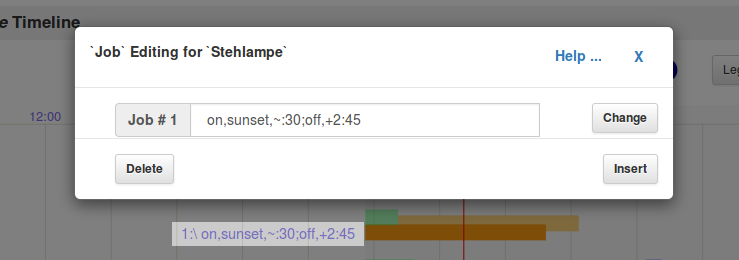
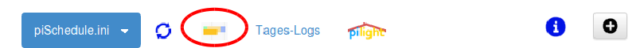

Actual Day Plan as a Timeline vers.0.7.5 2017-01-14_18


Timeline is an alternative method to
show,add and change the jobs -- the ON/OFF switching time and also
the random offsets -- for a selected device.
- Show all Job definitions of a selected device with interactive Job-bars and legend
- Displayed time schedule is defined with start parameters:
'prefs' calls on the browser page allow changing them:/startTime?hh:mmand/endTime?hh:mm - Navigation with buttons for Timline zoom in/out, move, reset, device selection
- Button [Legend] changes the legend position (right or left of the bar) or hides it
- On/Off switch shows the actual status of the selected device
and also allows to toggle the device
- A red cursor shows the actual time and is updated with each call / any function
- A blue cursor is used as a pointer, it is switched on with a mouse click. If shown, it can be moved to another position. That way for any situation on the bar diagram the time can be shown
- Click on the window header calls the previous page
Job-Bars - Outline and Functions
For each device with the selected Job-List (INI) file the defined
jobs are graphically displayed in form of a job-bars with a
legends. The device selection is made with a pull-down menu.
- orange bar: from On to Off time
- green bar: random time shift for On time
- blue bar: random time shift for Off time
- orange point: On time without a related Off time
- black point: Off time without a related On time
- click on the bar will show the On/Off time with cursors and
time values
⇒ Moving the On/Off time with cursor/mouse click will change the job time values
⇒ These cursor/mouse clicks are also available for random time shifts
Legends beside the Job-Bars

- Mouse click on the 'legend' beside the jab-bars will open a
text Box. This shows the selected job with some additional
handles:
- Job 'Change'
Changes are made within the textbox. This is an Expert Mode!
Note: Wrong syntax will not be resolved at the moment!
-
Job 'Insert'
The displayed job will be duplicated and inserted in the Job-List before the actual job - Job 'Delete'
The displayed job will be removed from the Job-List
Box for Saving / Defining a new Job
- Save the Changes
The changes to the Timeline display are temporary as long as they are not saved to the displayed Job-List (INI) file.
The activation of the changes to the Job-List are only done with a reload of the Job-List on the page "Actual Dayplan"
- A button with [ + ] is used to add a new, predefined job for
the selected device. That new job will be added at the top of
the Job-List.
Timeline Activation
To open Timeline on the page "piSchedule -- Actual Day Plan" has an additional menu item:

Timeline -- General Notes
- Timeline is usable also on mobile devices with touchscreens. Instead of using cursor/mouse using a fingertip or a pointer device will do the job
- Timeline is ready to use in a day-to-day usage. As a new
functionality and to met user acceptance feedback is very much
welcomed, for functionality, forms, colors etc .. please use the
piSchedule Forum.
This can be opened easily while running piSchedule on the page "/home" with the menu [Help] or open the page "/about" and follow the Forum
Known Problems with Timeline
- With the screen zoomed using the browser functions, the blue cursor gives wrong position/time value
- The piSchedule Timline display scales not with the size of the browser window. Use the reload of Timeline. Same is true with rotation the screen.
© neandr -- piSchedule is a free Open Source Project -- Feel free to use it.
 Donate what piSchedule is worth for you.
Donate what piSchedule is worth for you.
For Comments, Questions and Feedback please use piSchedule Forum